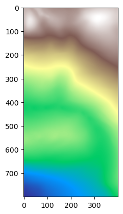
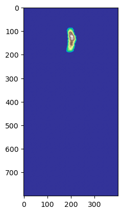

import os
from pathlib import Path
import sys
import rasterio
os.environ['PYTHONPATH'] = os.path.join(os.getcwd(), '../../..')
os.environ['ZOOMY_DIR'] = os.path.join(os.getcwd(), '../../..')
os.environ['ZoomyLog'] = 'Default'
os.environ['ZoomyLogLevel'] = 'INFO'
os.environ['JAX_ENABLE_X64'] = 'True'
os.environ['ZOOMY_AMREX_HOME'] = '/home/is086873/MBD/Git/amrex'
project_root = Path.cwd().parents[2] # 0=current, 1=.., 2=../..
sys.path.append(str(project_root))Simulate from DEM
Simulate from FEM
Imports
Warning
You need to modify ZOOMY_AMREX_HOME below to point to your local AMReX installation
Load packages
import os
import numpy as np
from sympy import Matrix
from library.fvm.solver import Settings
from library.model.models.shallow_water import ShallowWaterEquations
from library.model.models.shallow_moments_topo import ShallowMomentsTopo, ShallowMomentsTopoNumerical
import library.model.initial_conditions as IC
import library.model.boundary_conditions as BC
from library.misc.misc import Zstruct
import library.transformation.to_amrex as trafo
from tutorials.amrex.helper import create_artificial_raster, show_raster, transform_tiffRead raster data
main_dir = os.getenv("ZOOMY_DIR")
dem_path = os.path.join(main_dir, 'data/ca_elev.tif')
ic_water_path = os.path.join(main_dir, 'data/ca_debrisflow.tif')
angle = 0.0
# dem_path = os.path.join(main_dir, 'data/evel_artificial.tif')
# ic_water_path = os.path.join(main_dir, 'data/release_artificial.tif')
# N = 100
# dx = 5.
# M = N * dx
# create_artificial_raster(lambda x, y: 1*np.exp((-(x+0.5*M)**2-y**2)/M/10), (-M, M, -M, M), dx, ic_water_path)
# create_artificial_raster(lambda x, y: 100 * np.exp(-(x+M)**2/M**2), (-M, M, -M, M), dx, dem_path)
# create_artificial_raster(lambda x, y: 1.*np.exp((-(x-1000)**2-(y-3000)**2)/10000.), (0, 2000, 0, 4000), 5, ic_water_path)
# ic_water_path, _ = transform_tiff(ic_water_path, tilt=False)
zoom = [[0, 800], [700,1100]] # [ymin,ymax], [xmin,xmax]
dem_path, angle = transform_tiff(dem_path, tilt=True, scale=1, zoom=zoom)
ic_water_path, _ = transform_tiff(ic_water_path, tilt=False, scale=1, zoom=zoom)
print(f'Tilt angle (degrees): {angle:.2f}')
show_raster(dem_path)
show_raster(ic_water_path)2119.715620611168 -0.22698929399103876 -0.00021292724603619957
Inclination angle: alpha: -12.79 degrees ; theta: -0.01 degrees
0.029961072081822165 -5.212249583064369e-06 -1.1138400164830554e-07
Inclination angle: alpha: -0.00 degrees ; theta: -0.00 degrees
Tilt angle (degrees): -12.79

Model definition
# Currently, BCs are not implemented in AMReX and periodic BCs are applied
bcs = BC.BoundaryConditions(
[
BC.Extrapolation(physical_tag="N"),
BC.Extrapolation(physical_tag="S"),
BC.Extrapolation(physical_tag="E"),
BC.Extrapolation(physical_tag="W"),
]
)
class MyModel(ShallowMomentsTopoNumerical):
def source(self):
out = Matrix([0 for i in range(self.n_variables)])
# out += self.inclination()
out += self.newtonian()
out += self.slip_mod()
# out += self.chezy()
return self.substitute_precomputed_denominator(out, self.variables[1], self.aux_variables.hinv)
level = 0
model = MyModel(
level=level,
boundary_conditions=bcs,
parameters=Zstruct(ey=np.sin(np.radians(-angle)), ez=np.cos(np.radians(-angle)), nu=0.000001, lamda=1/1000., rho=1000, c_slipmod=1/30, C=300),
# aux_variables = ['hinv'] + [f'dalpha_{i}_dx' for i in range(level+1)] + [f'dbeta_{i}_dy' for i in range(level+1)],
aux_variables = ['hinv'],
)
print(model.parameters.keys())
print(model.parameter_values)['g', 'ex', 'ey', 'ez', 'eps_low_water', 'rho', 'nu', 'lamda', 'c_slipmod', 'C']
[9.81000000e+00 0.00000000e+00 2.21358269e-01 9.75192554e-01
1.00000000e-06 1.00000000e+03 1.00000000e-06 1.00000000e-03
3.33333333e-02 3.00000000e+02]# model.source()model.eigenvalues()\(\displaystyle \left[\begin{matrix}0\\\begin{cases} hinv \left(n_{0} q_{2} + n_{1} q_{3}\right) & \text{for}\: q_{1} > 1.0 \cdot 10^{-8} \\0 & \text{otherwise} \end{cases}\\\begin{cases} hinv \left(n_{0} q_{2} + n_{1} q_{3} - q_{1}^{\frac{3}{2}} \sqrt{ez g} \sqrt{n_{0}^{2} + n_{1}^{2}}\right) & \text{for}\: q_{1} > 1.0 \cdot 10^{-8} \\0 & \text{otherwise} \end{cases}\\\begin{cases} hinv \left(n_{0} q_{2} + n_{1} q_{3} + q_{1}^{\frac{3}{2}} \sqrt{ez g} \sqrt{n_{0}^{2} + n_{1}^{2}}\right) & \text{for}\: q_{1} > 1.0 \cdot 10^{-8} \\0 & \text{otherwise} \end{cases}\end{matrix}\right]\)
model.quasilinear_matrix()\(\displaystyle \left[ \left[\begin{matrix}0 & 0 & 0 & 0\\0 & 0 & 1 & 0\\0 & ez g q_{1} - hinv^{2} q_{2}^{2} & 2 hinv q_{2} & 0\\0 & - hinv^{2} q_{2} q_{3} & hinv q_{3} & hinv q_{2}\end{matrix}\right], \ \left[\begin{matrix}0 & 0 & 0 & 0\\0 & 0 & 0 & 1\\0 & - hinv^{2} q_{2} q_{3} & hinv q_{3} & hinv q_{2}\\0 & ez g q_{1} - hinv^{2} q_{3}^{2} & 0 & 2 hinv q_{3}\end{matrix}\right]\right]\)
Code transformation and AMReX compilation
currently, we always “clean” and compile from scratch. Comment out “make clean” to disable.
import shutil
from pathlib import Path
settings = Settings(name="ShallowMoments", output=Zstruct(directory=f"outputs/amrex_{level}"))
source_dir = Path(os.path.join(main_dir, 'library/amrex/Exec'))
output_dir = Path(os.path.join(main_dir, settings.output.directory))
if os.path.exists(output_dir):
shutil.rmtree(output_dir)
trafo.write_code(model, settings)
main_dir = os.getenv("ZOOMY_DIR")
os.environ['ZOOMY_AMREX_MODEL'] = os.path.join(main_dir, os.path.join(settings.output.directory, '.c_interface'))2025-09-24 16:05:57.966 | WARNING | library.misc.misc:__init__:143 - No 'filename' attribute found in output Zstruct. Default: 'simulation' 2025-09-24 16:05:57.969 | WARNING | library.misc.misc:__init__:146 - No 'clean_directory' attribute found in output Zstruct. Default: False
import subprocess
base = os.path.join(os.environ['ZOOMY_DIR'], 'library/amrex/')
cmds = [
f"cp ../../{settings.output.directory}/.c_interface/model.h ./Source/model.h",
"source ~/.zshrc",
"source setup.sh",
"cd Exec",
# "make clean",
"make"
]
subprocess.run(" && ".join(cmds), shell=True, executable="/bin/zsh", cwd=base)
setup.sh:4: command not found: module
setup.sh:5: command not found: module
setup.sh:6: command not found: micromambaCompletedProcess(args='cp ../../outputs/amrex_0/.c_interface/model.h ./Source/model.h && source ~/.zshrc && source setup.sh && cd Exec && make', returncode=127)Prepare raster data for AMReX
… and copy stuff to the output directory …
output_dir.mkdir(parents=True, exist_ok=True) # make sure output folder exists
for item in source_dir.iterdir():
dest = output_dir / item.name
if item.is_dir():
shutil.copytree(item, dest, dirs_exist_ok=True)
else:
shutil.copy2(item, dest)
shutil.copy(dem_path, output_dir)
shutil.copy(ic_water_path, output_dir)
print("The simulation output will be written to: ", output_dir)
from library.amrex.preprocess_rasterdata import preprocess
preprocess(os.path.join(output_dir, 'inputs'), dem_path, ic_water_path)The simulation output will be written to: /home/ingo/Git/Zoomy/web/tutorials/amrex/../../../outputs/amrex_0
✓ raw files: adjusted_ca_elev.raw adjusted_ca_debrisflow.raw
✓ inputs updated → /home/ingo/Git/Zoomy/outputs/amrex_0/inputsDo the Simulation
run in the notebook or as a batch job
run_in_notebook = Falseif (run_in_notebook):
base = os.path.join(os.environ['ZOOMY_DIR'], 'library/amrex/')
cmds = [
"source ~/.zshrc",
"source setup.sh",
f"cd ../../{settings.output.directory}",
"./clean.sh",
"mpiexec -np 4 ./main3d.gnu.MPI.ex inputs",
]
subprocess.run("\n".join(cmds), shell=True, executable="/bin/zsh", cwd=base)
else:
base = os.path.join(os.environ['ZOOMY_DIR'], 'library/amrex/')
cmds = [
"source ~/.zshrc",
"source setup.sh",
f"cd ../../{settings.output.directory}",
"./clean.sh",
"sbatch batch.sh < inputs",
]
subprocess.run("\n".join(cmds), shell=True, executable="/bin/zsh", cwd=base)
setup.sh:4: command not found: module
setup.sh:5: command not found: module
setup.sh:6: command not found: micromamba
./clean.sh:3: no matches found: plt*
./clean.sh:4: no matches found: output*.txt
./clean.sh:5: no matches found: Backtrace*
zsh:5: command not found: sbatch